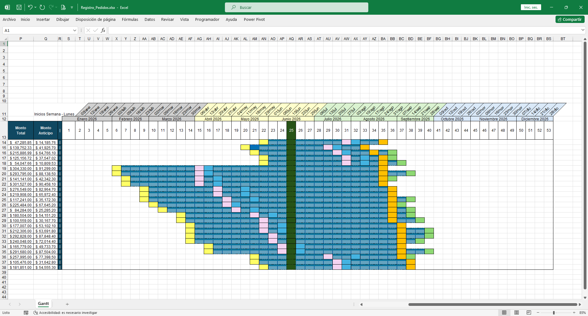
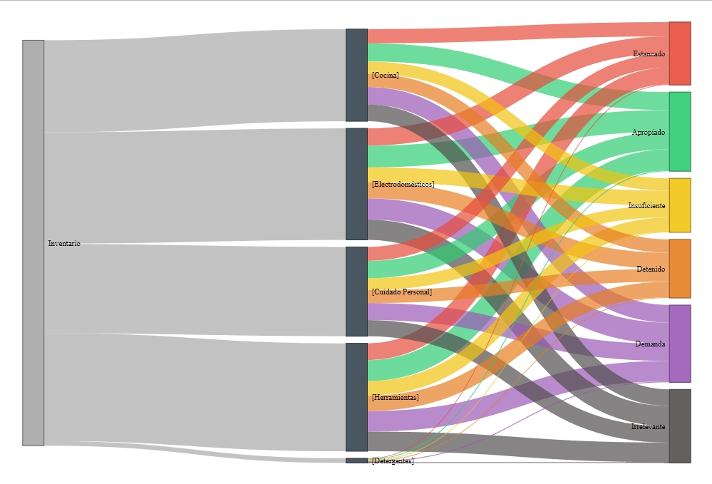

Especialista en Excel y Análisis de Datos.

Un diagrama Gantt con formulas y formato condicional para monitorear las fechas y estados de los pedidos de una empresa.
Herramientas: Fórmulas, Formato condicional.
Ver/Descargar Proyecto
Archivo .R que genera inventarios aleatorios para clasificarlos en base a categorías, y construye un diagrama de Sankey.
Herramientas: Librerías (dplyr,networkD3).
Descargar Script